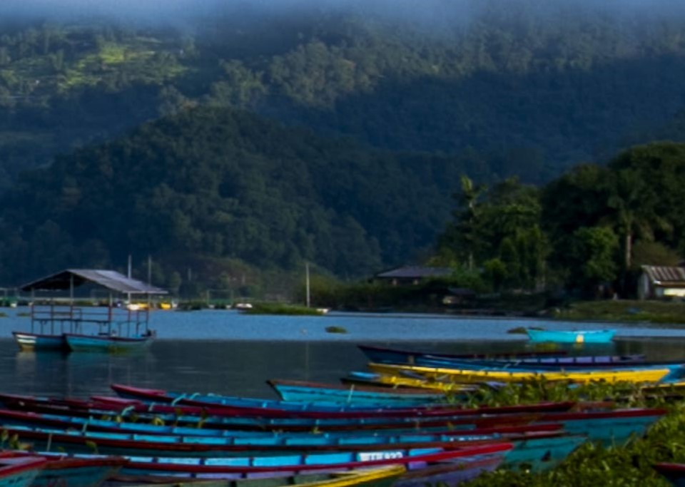

Kathmandu
Kathmandu, the vibrant and culturally rich capital of Nepal, is a city
that blends ancient traditions with modern life, creating an
enchanting tapestry of history and contemporary vibrancy. Nestled
within the Kathmandu Valley and surrounded by picturesque hills, this
city is a treasure trove of UNESCO-listed heritage sites that bear
witness to its illustrious past.
Pokhara

Pokhara, a picturesque jewel nestled in the embrace of Nepal's
majestic Annapurna mountain range, is a destination that enchants the
soul with its breathtaking beauty and tranquil allure. Situated in the
heart of the country, Pokhara boasts a mesmerizing blend of nature's
finest elements - serene lakes, lush forests, cascading waterfalls,
and snow-capped peaks that pierce the sky. The city's idyllic setting
is further enhanced by the glistening Phewa Lake, where the reflection
of the Annapurna and Machapuchare mountains creates a surreal mirror
image that seems to bridge the earthly and celestial realms.
Chitwan
Nestled within the lush embrace of Nepal's Terai lowlands, Chitwan is
a haven of biodiversity and natural splendor. This enchanting region
beckons travelers with its vibrant mosaic of ecosystems, where dense
jungles, winding rivers, and open grasslands create a haven for an
array of wildlife. Chitwan National Park, a UNESCO World Heritage
Site, stands as a testament to the preservation of this delicate
balance, home to elusive Bengal tigers, one-horned rhinoceroses,
playful elephants, and a myriad of avian species.
Lumbini

Lumbini, an oasis of spiritual significance, cradles the revered
origins of Buddhism as the birthplace of Siddhartha Gautama, who later
became known as Buddha. The sacred garden within Lumbini encapsulates
the spirituality and serenity of the journey towards enlightenment.
Marked by the iconic Ashoka Pillar, the Maya Devi Temple, and a
tranquil pond, Lumbini radiates an aura of transcendence that draws
pilgrims and seekers from around the globe. As one explores the
beautifully landscaped grounds, a profound sense of introspection and
connection with the teachings of compassion and enlightenment pervades
the air.
Everest Base Camp
Embark on a trek to the legendary Everest Base Camp, an extraordinary expedition that weaves through the heart of the Himalayas and offers a profound connection with nature's grandeur. This iconic journey is a pilgrimage for adventurers and seekers of remarkable experiences, as it leads intrepid souls through some of the world's most awe-inspiring landscapes. The trail winds its way through rugged terrain, quaint Sherpa villages, and ancient monasteries, providing a glimpse into the rich cultural tapestry that has flourished in the shadow of towering peaks.